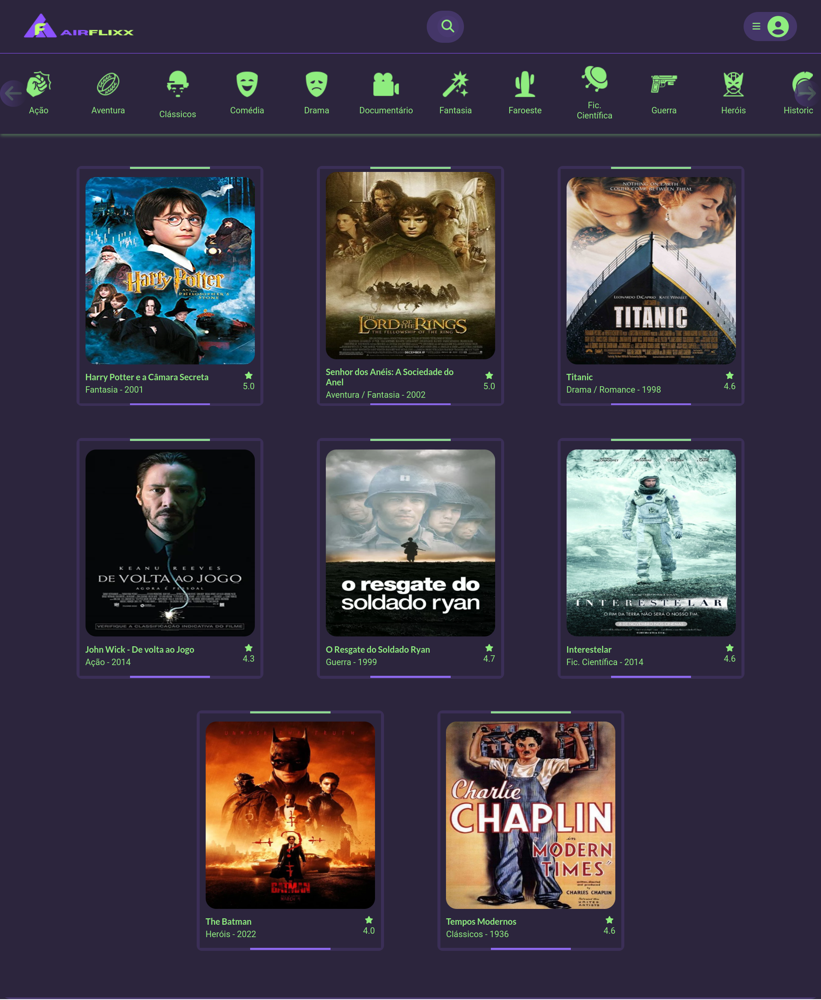

01 de Maio de 2023
Projeto AirFlixx (Clone AirBnB)

Meu projeto até então foi um clone do layout do site
AirBnB com outra temática, apenas para exercitar um
pouco as habilidades de HTML e CSS e um pouco do
Javascript. Foi bom ver minhas evolução do primeiro
projeto até esse e espero continuar melhorando cada vez
mais.